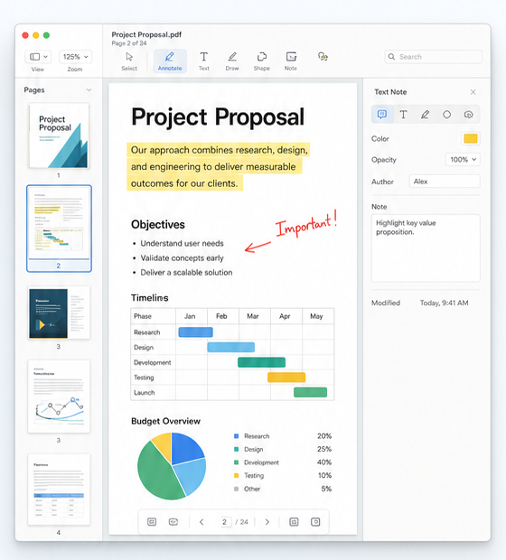
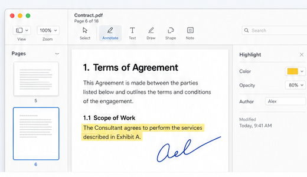

Read with clarity
Navigate long documents with thumbnails, search, zoom, and flexible layouts.
- Continuous, single-page, and two-page views
- Search with highlighted results
- Page thumbnails and quick navigation
A native PDF workspace to read, annotate, organize, and build PDFs locally.

Fast, local, and designed around everyday PDF work.
Navigate long documents with thumbnails, search, zoom, and flexible layouts.
Add highlights, notes, text fields, stamps, and signature placeholders.
Create PDFs, add image pages, merge files, rotate, reorder, and delete pages.
OpenPDF keeps PDF actions close to the document: pages on the left, reading in the center, and precise tools on the right.

PDF Expert is a mature commercial benchmark. OpenPDF starts smaller: local, native, transparent, and focused on core PDF workflows first.
English and German are built in first. The localization layer is ready for more major languages later.
OpenPDF grows step by step, starting with the features that make daily PDF work easier.
Fill and create interactive form fields with validation.
Permanently remove sensitive content, not just cover it.
Make scanned PDFs searchable and selectable.
Process multiple files for conversion, export, and optimization.
OpenPDF is built for people who want fast local tools without turning every document into a cloud workflow.